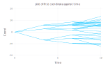
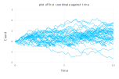
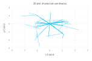

Usage
Explore how optimal stopping problems transform under random-time coordinate transforms.
Installation
InvariantStopping can be installed by running
using Pkg;
Pkg.add("InvariantStopping")You can validate the success of the installation by running the following toy example.
using InvariantStopping
state = State(0.0) # x coord
schedule = InvariantStopping.Tree(LinRange(0,10,4), 3)
process = BrownianMotion()
sample = get_sample(state, schedule, process)The generated Sample is a tree of trajectories made by a standard 1-dimensional BrownianMotion with State initialized at the origin.
p = InvariantStopping.plot(sample) # Plot 1D
Overview
The target of this package is to allow the user to sample a process along arbitrary stopping times.
Perhaps the best way to understand the idea is with an example.
state = State(0.0)
process = BrownianMotion()Instead of having a tree over DeterministicTime

Let us define a tree over StoppingTime.

Stopping Times
To build our stopping times, we first need a few predicates.
function up_deviation(t,state_list)
x = state_list[1].coord[1]
return (x > 0.3) || t >= 10.0
end
function down_deviation(t,state_list)
x = state_list[1].coord[1]
return (x < -0.3) || t >= 10.0
end
function large_deviation(t,state_list)
x = state_list[1].coord[1]
return (abs(x) > 0.4) || t >= 10.0
endThen we create three hitting time using the HittingTime constructor.
timelist = LinRange(0,10,100)
up_deviation_hit= HittingTime(timelist, up_deviation)
down_deviation_hit = HittingTime(timelist, down_deviation)
large_deviation_hit = HittingTime(timelist, large_deviation)Having three stopping times, we will use them to populate our schedule.
Schedule
We induce an ordering on our stopping times via a directed graph made of Schedule nodes.
deviation_escalation = Schedule(up_deviation_hit, [Schedule(down_deviation_hit, [Schedule(large_deviation_hit) for _ in 1:5 ]) for _ in 1:5])
schedule = Schedule(DeterministicTime(0.0), [deviation_escalation for _ in 1:12])The above schedule defines a tree where each layer is populated by a single type of stopping time. Let's see what our original 1-dimensional Brownian motion looks like when sampled according to our newly defined schedule.
sample = get_sample(state, schedule, process)
p = InvariantStopping.plot(sample) # Plot 1D
We can observe that some paths were stopped before reaching the end. We can also observe that our choice of schedule causes the zig-zagging trajectories to be over-represented.
Note that this shows only the actual Sample, as opposed to all the intermediate LoweredSample that were sampled in order to service the stopping times. If we want to include all the intermediate steps in our plot, we can do.
p = InvariantStopping.plot_lower(sample) # Plot 1D
State
We could have chosen to simulate our Brownian motion in four dimensions as opposed to two.
state = State((0.0,0.0,0.0,0.0))Let's choose our schedule such that the process duplicates when it hits the boundary of the 4D unit sphere.
function sphere(t,state_list)
return sqrt(sum([state_list[1].coord[i]^2 for i in 1:length(state_list)])) > 1 || t >= 10.0
end
function stop_at_ten(t,state_list)
return t >= 10.0
end
hit_ten = HittingTime(LinRange(0,10,100),stop_at_ten)
hit_sphere = HittingTime(LinRange(0,10,100), sphere)
hit_sphere_doubling = Schedule(hit_sphere, [Schedule(hit_ten) for _ in 1:2])
schedule = Schedule(DeterministicTime(0.0),[hit_sphere_doubling for _ in 1:20 ])We sample.
sample = get_sample(state,schedule,process)Let's plot the 4-dimensional brownian motion along its first two coordinates.
p = InvariantStopping.plot(sample,[1,2])
And
p = InvariantStopping.plot_lower(sample,[1,2])
Process
So far we have used the process BrownianMotion but we could a different process, for instance GeometricBrownianMotion.
state = State(1.0)
process = GeometricBrownianMotion(0.06, 0.2, 0.0) # (rate, sigma, dividend)Let's see what happens if we make the process doubles once it crosses a certain threshold.
function space_time_deviation(t,state_list)
x = state_list[1].coord[1]
return x > 4 - t/10 || t >= 10.0
end
function stop_at_ten(t,state_list)
return t >= 10.0
end
hit_ten = HittingTime(LinRange(0,10,100),stop_at_ten)
space_time_deviation_doubling = Schedule(HittingTime(timelist, space_time_deviation),[Schedule(hit_ten) for _ in 1:2])
schedule = Schedule(DeterministicTime(0.0),[space_time_deviation_doubling for _ in 1:15])sample = get_sample(state, schedule, process)
p = InvariantStopping.plot(sample)p = InvariantStopping.plot_lower(sample)
One can define a new process by implementing the forward method for a concrete type. See UnderlyingModel.
Summary
We have seen how the InvariantStopping package can be used to generate sample
sample = get_sample(state, schedule, process)where the state, schedule and process can be varied independently. Moreoever, the package allows one to define very generic schedule in the form of a directed tree over the space of stopping times.
For more information on schedule, check dev.